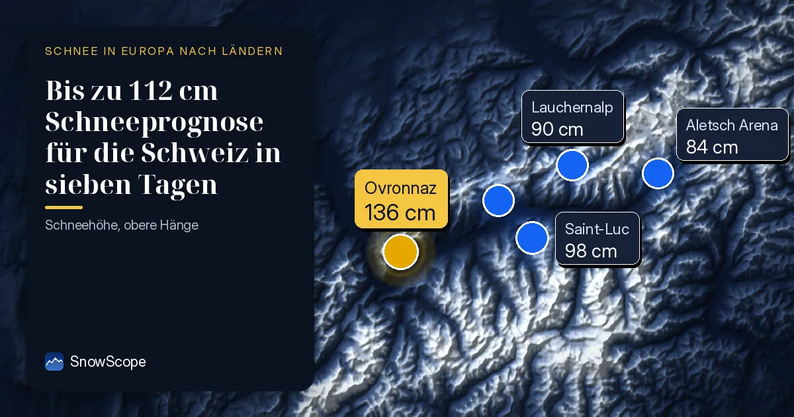

Bis zu 112 cm Schneeprognose für die Schweiz in sieben Tagen
Erhebliche Schneefälle sind für die Schweiz prognostiziert. Unser Modell prognostiziert 112 cm Neuschnee bis zum 24. November, wobei der 17. November mit etwa 29 cm der Schwerpunkt ist.
Die Live-Schneeprognose für Ovronnaz in der SnowScope-AppSchneehöhen, Pulverschnee-Alarme und 3D-Karte, gratis.
Das kommt
Das ist ein bedeutsames Ereignis für die Hochgebirge. Die kommende Woche bringt den Bergen enorme Mengen Neuschnee und Frischwasser. Unser Schneemodell prognostiziert 69 cm Neuschnee in den nächsten drei Tagen, ansteigend auf 112 cm bis zum 24. November. Das ist wichtig für das Frischwasser im Frühling und für die Bäche und Flüsse, die von den Gipfeln herabfließen.
| Skigebiet | Heute | Normal an diesem Tag | Anteil am Normalwert |
|---|---|---|---|
| Ovronnaz | 24 cm | 18 cm | 133 % |
| Saint-Luc | 30 cm | 24 cm | 125 % |
| Crans-Montana | 4 cm | 18 cm | 22 % |
| Lauchernalp | 15 cm | 19 cm | 79 % |
| Aletsch Arena | 11 cm | 17 cm | 65 % |

Die nächste Woche im Detail
Der 17. November wird der Tag mit den meisten Niederschlägen sein, mit etwa 29 cm erwartet auf dem Hochgebirge. Bis zum 19. November werden die Hauptschneefälle vorbei sein. Die Walliser Alpen bekommen das meiste Wasser aus diesem Schneefall; die Region hat bereits 41 cm in den letzten drei Tagen erhalten, und mehr kommt. Das Berner Oberland bekam 27 cm in derselben Zeit. Nach dem 24. November schwächt sich das System deutlich ab. Woche zwei (24.–30. November) zeigt maximal nur 29 cm, was auf trockeneres Wetter hindeutet.

Wo Schnee am tiefsten liegt
Die Höhe ist entscheidend bei Schneeprognosen zu Saisonbeginn. Die 1.400-m-Schneegrenze markiert die heutige Grenze. Darunter ist Schnee selten oder schmilzt schnell. Über 2.500 m ist die Schneedecke vollständig und erreicht durchschnittlich 18 cm Mächtigkeit—eine solide Grundlage für den Saisonbeginn. Ovronnaz in der Valais mit einer Höchstelevation von 2.456 m führt mit einer heute gemessenen Schneemächtigkeit von 136 cm alle 279 Resorts an. Es wird bis zum 19. November um weitere 71 cm wachsen. Saint-Luc und Crans-Montana werden auch deutlich zulegen: jeweils 51 cm und 64 cm. Diese Zahlen sind Modellschätzungen für die Resortgebiete, daher hängen die tatsächlichen Mächtigkeiten von der Neigung und dem Wind ab.
Wasser am Boden
In nur 72 Stunden erhielten 8.740 km² mindestens 5 cm Neuschnee—eine Wassermenge, die für die Bilanz bedeutsam ist. Die Walliser Alpen bekamen 41 cm; das Berner Oberland erhielt 27 cm. Betrachtet man das größere Bild, stieg die schneebedeckte Fläche von gestern auf heute um 1.820 km² allein an. Die kartierte Fläche ging von 14.690 km² gestern auf 16.510 km² heute. Das ist echtes Wachstum, und es breitet sich täglich nach oben aus.
Die wachsende Schneedecke
Der Trend über eine ganze Woche ist bemerkenswert. Vor sieben Tagen waren nur 13.810 km² der Schweiz mit Schnee bedeckt. Heute 16.510 km². Das sind 2.700 km² neuer Schneebedeckung in sieben Tagen. Ovronnaz führt weiterhin unter allen 279 Resorts mit 136 cm an. Schnee liegt jetzt auf 206 dieser Resorts—ein großer Sprung von knapp der Hälfte vor wenigen Tagen. Die Schneedecke wächst schnell, und die Schneegrenze steigt täglich.
Schneemächtigkeit und Bedeckung nach Höhe
Die Schneemächtigkeit steigt steil mit der Höhe, wie erwartet. Zwischen 1.000 und 1.500 m ist nur 22 Prozent der Zone bedeckt und es liegt praktisch keine Schneedecke vor; Felsen dominieren noch. Bei 1.500–2.000 m erreicht die Bedeckung 92 Prozent, aber die durchschnittliche Mächtigkeit ist nur 3 cm—dünn, und Steine ragen noch aus dem Schnee heraus. Bei 2.000–2.500 m 100 Prozent Bedeckung und 7 cm Mächtigkeit. Über 2.500 m erreicht die durchschnittliche Mächtigkeit 18 cm über die gesamte 100 Prozent bedeckte Zone. Der Schnee in der Höhe speichert das Wasser für den Frühling.
Tipps für Skifahrer
- Schau dir den Lawinenwarndienst an, bevor du abseits der Pisten fährst, besonders über 2.000 m, wo schnell Neuschnee anwächst und instabil sein kann.
- Zu Saisonbeginn ist der Schnee unter 1.500 m noch dünn; Felsen ragen noch heraus, also bleib auf den markierten Pisten.
- Ovronnaz und andere hochgelegene Walliser Resorts werden bis zum 19. November die besten Bedingungen haben, also buche frühzeitig, falls deine Termine noch flexibel sind.
- Bis zum 23. November werden mehr als 110 cm Neuschnee in der Hochzone liegen—so viel Schnee, wie normalerweise in Wochen fällt, kommt in nur sieben Tagen.
- Nach dem 24. November dürfte es trockener werden, daher ist das die Hauptschneeperiode des Monats.
Zu diesen Zahlen
Die Schneehöhen der Skigebiete sind der meiste Schnee in den oberen Hängen laut SnowScope-Schneemodell (etwa 1 km, Lauf vom 16. November); es sind Schätzungen für eine Fläche, keine Messung an einem Punkt. Werte von Messstationen sind Messungen am angegebenen Tag. Prognosen können sich ändern. Lies vor dem Freeriden immer den offiziellen Lawinenlagebericht.
Diesen Bericht zitieren
Für Forschung, Lehre oder Presse: Zahlen und Grafiken sind unter CC BY 4.0 mit dieser Quellenangabe frei nutzbar.
SnowScope (2026), Bis zu 112 cm Schneeprognose für die Schweiz in sieben Tagen, https://snowscope.app/blog/de/2026/11/switzerland-snow-report-16-november-2026.html, abgerufen am 2026-11-16
SnowScope (Atlas Labs). (2026, November 16). Bis zu 112 cm Schneeprognose für die Schweiz in sieben Tagen. SnowScope snow reports. https://snowscope.app/blog/de/2026/11/switzerland-snow-report-16-november-2026.html
BibTeX
@misc{snowscope2026switzerlandsnowreport16n,
author = {{SnowScope (Atlas Labs)}},
title = {Bis zu 112 cm Schneeprognose für die Schweiz in sieben Tagen},
year = {2026},
month = nov,
howpublished = {\url{https://snowscope.app/blog/de/2026/11/switzerland-snow-report-16-november-2026.html}},
note = {Published 2026-11-16 20:42 UTC; accessed 2026-11-16}
}· CC BY 4.0 · Methoden, Daten und Werkzeuge →
Ovronnaz: Schnee und Temperatur nach Höhe, dieser Winter vs letzter (Werkzeuge) →
Ovronnaz folgen
Gratis: eine Nachricht, wenn Neuschnee kommt, und jeden Morgen die Vorhersage.